Example: Analyzing #statstiktok
statstiktok.RmdFirst, let’s load tiktokr and some tidyverse libraries.
Make sure to use your preferred Python installation
library(reticulate)
use_python(py_config()$python)The next two steps you only need to do once:
- Install necessary Python libraries
- Authentication
In November 2020, Tiktok increased its security protocol. They now frequently show a captcha, which is easily triggered after a few requests. This can be solved by specifying the cookie parameter. To get a cookie session:
- Open a browser and go to “http://tiktok.com”
- Scroll down a bit, to ensure, that you don’t get any captcha
- Open the javascript console (in Chrome: View > Developer > Javascript Console)
- Run
document.cookiein the console. Copy the entire output (your cookie). - Run
tk_auth()in R and paste the cookie.
Click on image below for screen recording of how to get your TikTok cookie:

The tk_auth function will save cookies (and user agent) as environment variable to your .Renviron file. You need to only run this once to use the tiktokr or whenever you want to update your cookie/user agent.
tk_auth(cookie = "<paste here the output from document.cookie>")Getting #statstiktok posts
Once per script you need to run tk_init to initialize tiktokr
tk_init()Let’s now get data on #statstiktok with tk_posts!
stats_tiktok <- tk_posts(scope = "hashtag", query = "statstiktok", n = 2000)Great! Now we have a dataset with metadata on tiktoks mentioning the hashtag ‘statstiktok’!
glimpse(stats_tiktok)
#> Rows: 123
#> Columns: 67
#> $ video_id <chr> "awesome", "awesome", "awesome", "awesome"…
#> $ video_height <int> 1024, 1024, 1024, 1024, 1024, 544, 1024, 1…
#> $ video_width <int> 576, 576, 576, 576, 576, 960, 576, 576, 54…
#> $ video_duration <int> 9, 7, 19, 12, 15, 10, 11, 13, 44, 8, 6, 9,…
#> $ video_ratio <chr> "720p", "720p", "720p", "720p", "720p", "7…
#> $ video_cover <chr> "https://p16-sign-sg.tiktokcdn.com/obj/tos…
#> $ video_originCover <chr> "https://p16-sign-sg.tiktokcdn.com/obj/tos…
#> $ video_dynamicCover <chr> "https://p16-sign-sg.tiktokcdn.com/obj/tos…
#> $ video_playAddr <chr> "https://v16-web.tiktok.com/video/tos/usea…
#> $ video_downloadAddr <chr> "https://v16-web.tiktok.com/video/tos/usea…
#> $ video_shareCover <chr> "c(\"\", \"https://p16-sign-sg.tiktokcdn.c…
#> $ video_reflowCover <chr> "https://p16-sign-sg.tiktokcdn.com/obj/tos…
#> $ author_id <chr> "6815076321426326533", "681507632142632653…
#> $ author_uniqueId <chr> "chelllarson", "chelllarson", "chelseaparl…
#> $ author_nickname <chr> "Mitchell", "Mitchell", "Chelsea Parlett",…
#> $ author_avatarThumb <chr> "https://p16-sign-va.tiktokcdn.com/musical…
#> $ author_avatarMedium <chr> "https://p16-sign-va.tiktokcdn.com/musical…
#> $ author_avatarLarger <chr> "https://p16-sign-va.tiktokcdn.com/musical…
#> $ author_signature <chr> "#statstiktok", "#statstiktok", "Just real…
#> $ author_verified <chr> "FALSE", "FALSE", "FALSE", "FALSE", "FALSE…
#> $ author_secUid <chr> "MS4wLjABAAAARU9QzliiCVeZiuAx4r-JdbzhucGjg…
#> $ author_secret <chr> "FALSE", "FALSE", "FALSE", "FALSE", "FALSE…
#> $ author_ftc <chr> "FALSE", "FALSE", "FALSE", "FALSE", "FALSE…
#> $ author_relation <int> 0, 0, 0, 0, 0, 0, 0, 0, 0, 0, 0, 0, 0, 0, …
#> $ author_openFavorite <chr> "FALSE", "FALSE", "FALSE", "FALSE", "FALSE…
#> $ author_commentSetting <int> 0, 0, 0, 0, 0, 0, 0, 0, 0, 0, 0, 0, 0, 0, …
#> $ author_duetSetting <int> 0, 0, 0, 0, 0, 0, 0, 0, 0, 0, 0, 0, 0, 0, …
#> $ author_stitchSetting <int> 0, 0, 0, 0, 0, 0, 0, 0, 0, 0, 0, 0, 0, 0, …
#> $ author_privateAccount <chr> "FALSE", "FALSE", "FALSE", "FALSE", "FALSE…
#> $ music_id <chr> "6886831115148036869", "689022456349447245…
#> $ music_title <chr> "Ur appreciated ily", "original sound", "o…
#> $ music_playUrl <chr> "https://sf16-sg.tiktokcdn.com/obj/musical…
#> $ music_coverThumb <chr> "https://p16-sign-va.tiktokcdn.com/tos-mal…
#> $ music_coverMedium <chr> "https://p16-sign-va.tiktokcdn.com/tos-mal…
#> $ music_coverLarge <chr> "https://p16-sign-va.tiktokcdn.com/tos-mal…
#> $ music_authorName <chr> "angela vasquez \U0001f49f", "carson", "Ra…
#> $ music_original <chr> "TRUE", "TRUE", "TRUE", "TRUE", "FALSE", "…
#> $ stats_diggCount <int> 42500, 2853, 2789, 1328, 1019, 638, 531, 2…
#> $ stats_shareCount <int> 6136, 480, 355, 10, 44, 11, 46, 38, 0, 17,…
#> $ stats_commentCount <int> 965, 75, 56, 27, 43, 2, 45, 16, 32, 10, 11…
#> $ stats_playCount <int> 554100, 47200, 40100, 15200, 11500, 3386, …
#> $ authorStats_followingCount <int> 32, 32, 240, 240, 240, 24, 240, 240, 7790,…
#> $ authorStats_followerCount <int> 259, 259, 1519, 1519, 1519, 2752, 1519, 15…
#> $ authorStats_heartCount <int> 45500, 45500, 12000, 12000, 12000, 32100, …
#> $ authorStats_videoCount <int> 5, 5, 69, 69, 69, 306, 69, 69, 490, 69, 69…
#> $ authorStats_diggCount <int> 13800, 13800, 785, 785, 785, 8462, 785, 78…
#> $ authorStats_heart <int> 45500, 45500, 12000, 12000, 12000, 32100, …
#> $ id <chr> "6895134839197011206", "689431916878766413…
#> $ desc <chr> "Where are all my fellow H0s at? No HAs al…
#> $ createTime <int> 1605398717, 1605208816, 1599615483, 159992…
#> $ challenges <chr> "list(id = \"1663286341999621\", title = \…
#> $ originalItem <chr> "FALSE", "FALSE", "FALSE", "FALSE", "FALSE…
#> $ officalItem <chr> "FALSE", "FALSE", "FALSE", "FALSE", "FALSE…
#> $ textExtra <chr> "list(awemeId = \"\", start = 47, end = 59…
#> $ secret <chr> "FALSE", "FALSE", "FALSE", "FALSE", "FALSE…
#> $ forFriend <chr> "FALSE", "FALSE", "FALSE", "FALSE", "FALSE…
#> $ digged <chr> "FALSE", "FALSE", "FALSE", "FALSE", "FALSE…
#> $ itemCommentStatus <int> 0, 0, 0, 0, 0, 0, 0, 0, 0, 0, 0, 0, 0, 0, …
#> $ showNotPass <chr> "FALSE", "FALSE", "FALSE", "FALSE", "FALSE…
#> $ vl1 <chr> "FALSE", "FALSE", "FALSE", "FALSE", "FALSE…
#> $ itemMute <chr> "FALSE", "FALSE", "FALSE", "FALSE", "FALSE…
#> $ privateItem <chr> "FALSE", "FALSE", "FALSE", "FALSE", "FALSE…
#> $ duetEnabled <chr> "TRUE", "TRUE", "TRUE", "TRUE", "TRUE", "T…
#> $ stitchEnabled <chr> "TRUE", "TRUE", "TRUE", "TRUE", "TRUE", "T…
#> $ shareEnabled <chr> "TRUE", "TRUE", "TRUE", "TRUE", "TRUE", "T…
#> $ isAd <chr> "FALSE", "FALSE", "FALSE", "FALSE", "FALSE…
#> $ effectStickers <chr> "NULL", "NULL", "NULL", "NULL", "NULL", "N…First, the data needs to be cleaned. Many variables that TikTok returns are not relevant, so we focus on the most important ones and clean the variable names using janitor::clean_names().
stats_tk <- stats_tiktok %>%
select(id, createTime,
author_id:author_nickname,
author_signature, author_avatarLarger,
desc, music_id:authorStats_heart) %>%
janitor::clean_names() %>%
distinct(id, .keep_all = T)
glimpse(stats_tk)
#> Rows: 123
#> Columns: 26
#> $ id <chr> "6895134839197011206", "6894319168787664…
#> $ create_time <int> 1605398717, 1605208816, 1599615483, 1599…
#> $ author_id <chr> "6815076321426326533", "6815076321426326…
#> $ author_unique_id <chr> "chelllarson", "chelllarson", "chelseapa…
#> $ author_nickname <chr> "Mitchell", "Mitchell", "Chelsea Parlett…
#> $ author_signature <chr> "#statstiktok", "#statstiktok", "Just re…
#> $ author_avatar_larger <chr> "https://p16-sign-va.tiktokcdn.com/music…
#> $ desc <chr> "Where are all my fellow H0s at? No HAs …
#> $ music_id <chr> "6886831115148036869", "6890224563494472…
#> $ music_title <chr> "Ur appreciated ily", "original sound", …
#> $ music_play_url <chr> "https://sf16-sg.tiktokcdn.com/obj/music…
#> $ music_cover_thumb <chr> "https://p16-sign-va.tiktokcdn.com/tos-m…
#> $ music_cover_medium <chr> "https://p16-sign-va.tiktokcdn.com/tos-m…
#> $ music_cover_large <chr> "https://p16-sign-va.tiktokcdn.com/tos-m…
#> $ music_author_name <chr> "angela vasquez \U0001f49f", "carson", "…
#> $ music_original <chr> "TRUE", "TRUE", "TRUE", "TRUE", "FALSE",…
#> $ stats_digg_count <int> 42500, 2853, 2789, 1328, 1019, 638, 531,…
#> $ stats_share_count <int> 6136, 480, 355, 10, 44, 11, 46, 38, 0, 1…
#> $ stats_comment_count <int> 965, 75, 56, 27, 43, 2, 45, 16, 32, 10, …
#> $ stats_play_count <int> 554100, 47200, 40100, 15200, 11500, 3386…
#> $ author_stats_following_count <int> 32, 32, 240, 240, 240, 24, 240, 240, 779…
#> $ author_stats_follower_count <int> 259, 259, 1519, 1519, 1519, 2752, 1519, …
#> $ author_stats_heart_count <int> 45500, 45500, 12000, 12000, 12000, 32100…
#> $ author_stats_video_count <int> 5, 5, 69, 69, 69, 306, 69, 69, 490, 69, …
#> $ author_stats_digg_count <int> 13800, 13800, 785, 785, 785, 8462, 785, …
#> $ author_stats_heart <int> 45500, 45500, 12000, 12000, 12000, 32100…Now we have a cleaned sample of #statstiktok!
Stats about tiktokers
Let`s first find out who the top posters are in the data. Chelsea Parlett-Pelleriti is the most prolific poster, when it comes to #statstiktok. This actually makes sense, considering that she is one of the pioneers of #statstiktok.
stats_tk %>%
count(author_unique_id, sort = T) %>%
filter(n >= 2) %>%
mutate(authr_url = paste0("https://www.tiktok.com/@", author_unique_id)) %>%
knitr::kable() %>%
kableExtra::kable_styling()| author_unique_id | n | authr_url |
|---|---|---|
| chelseaparlettpelleriti | 61 | https://www.tiktok.com/@chelseaparlettpelleriti |
| baboutunt | 5 | https://www.tiktok.com/@baboutunt |
| dsquintana | 5 | https://www.tiktok.com/@dsquintana |
| lakens | 4 | https://www.tiktok.com/@lakens |
| epiellie | 3 | https://www.tiktok.com/@epiellie |
| morgane_fevrier | 3 | https://www.tiktok.com/@morgane_fevrier |
| statprof | 3 | https://www.tiktok.com/@statprof |
| bookmatter | 2 | https://www.tiktok.com/@bookmatter |
| chelllarson | 2 | https://www.tiktok.com/@chelllarson |
| dataislife | 2 | https://www.tiktok.com/@dataislife |
| ladykelp | 2 | https://www.tiktok.com/@ladykelp |
| rismyfavouriteletter | 2 | https://www.tiktok.com/@rismyfavouriteletter |
| ryansscience | 2 | https://www.tiktok.com/@ryansscience |
| sam_d_parsons | 2 | https://www.tiktok.com/@sam_d_parsons |
Metadata includes author data, such as the unique handle of the author (author_unique_id), the text of their bio (author_signature) and some author stats (like the follower count: author_stats_follower_count). In addition to classical social media metrics (number of accounts followed, posts, likes), Tiktok also includes ‘diggs’. Unfortunately, there is no documentation on how this metric is computed. The author_stats_heart shows how many likes a user has received in total.
tiktokers <- stats_tk %>%
select(contains("author")) %>%
add_count(author_unique_id, name = "vids_in_sample") %>%
distinct(author_id, .keep_all = T)
glimpse(tiktokers)
#> Rows: 39
#> Columns: 13
#> $ author_id <chr> "6815076321426326533", "6736543492652696…
#> $ author_unique_id <chr> "chelllarson", "chelseaparlettpelleriti"…
#> $ author_nickname <chr> "Mitchell", "Chelsea Parlett", "mr Akram…
#> $ author_signature <chr> "#statstiktok", "Just really bad #statsT…
#> $ author_avatar_larger <chr> "https://p16-sign-va.tiktokcdn.com/music…
#> $ music_author_name <chr> "angela vasquez \U0001f49f", "Rachel Mar…
#> $ author_stats_following_count <int> 32, 240, 24, 7790, 33, 3130, 2691, 42, 9…
#> $ author_stats_follower_count <int> 259, 1519, 2752, 12100, 13100, 13700, 29…
#> $ author_stats_heart_count <int> 45500, 12000, 32100, 122800, 119900, 195…
#> $ author_stats_video_count <int> 5, 69, 306, 490, 124, 416, 108, 83, 178,…
#> $ author_stats_digg_count <int> 13800, 785, 8462, 11800, 34000, 284, 149…
#> $ author_stats_heart <int> 45500, 12000, 32100, 122800, 119900, 195…
#> $ vids_in_sample <int> 2, 61, 1, 1, 1, 3, 1, 2, 1, 1, 4, 5, 1, …Any famous tiktoker using #statstiktok?
tiktokers %>%
select(author_unique_id, contains("count")) %>%
arrange(desc(author_stats_following_count)) %>%
rename_all(stringr::str_remove_all, "(author_stats_)") %>%
arrange(desc(follower_count)) %>%
slice(1:10) %>%
mutate(authr_url = paste0("https://www.tiktok.com/@", author_unique_id)) %>%
knitr::kable() %>%
kableExtra::kable_styling()| author_unique_id | following_count | follower_count | heart_count | video_count | digg_count | authr_url |
|---|---|---|---|---|---|---|
| morgane_fevrier | 3130 | 13700 | 195900 | 416 | 284 | https://www.tiktok.com/@morgane_fevrier |
| easyworkgaming | 33 | 13100 | 119900 | 124 | 34000 | https://www.tiktok.com/@easyworkgaming |
| claredoe | 7790 | 12100 | 122800 | 490 | 11800 | https://www.tiktok.com/@claredoe |
| dimplisimply81 | 4 | 9677 | 150600 | 471 | 5296 | https://www.tiktok.com/@dimplisimply81 |
| office305 | 9 | 3562 | 35200 | 178 | 978 | https://www.tiktok.com/@office305 |
| bellasunrae | 2691 | 2907 | 26300 | 108 | 14900 | https://www.tiktok.com/@bellasunrae |
| akrampathan4545 | 24 | 2752 | 32100 | 306 | 8462 | https://www.tiktok.com/@akrampathan4545 |
| chelseaparlettpelleriti | 240 | 1519 | 12000 | 69 | 785 | https://www.tiktok.com/@chelseaparlettpelleriti |
| ryansscience | 42 | 1464 | 39200 | 83 | 1298 | https://www.tiktok.com/@ryansscience |
| mahdikhdiri | 24 | 1059 | 14100 | 753 | 1429 | https://www.tiktok.com/@mahdikhdiri |
Some of the tiktokers who used #statstiktok at least once seem to be pretty successful with more than 13700 followers. Maybe their one post post mentioning #statstiktok could have been be responsible for their success (…but most likely not :P). You can also see the strangeness of the digg count. It seems somehow uncorrelated to the other metrics.
Posts over time
When looking at frequency of posts over time, we see a continuous increase in the number of tiktoks mentioning #statstiktok since April 2020 (coinciding with the start of lockdowns in many countries!).
The function ´from_unix´ converts the timestamp in ´create_time´ to actual datetime.
stats_tk %>%
mutate(create_date = from_unix(create_time) %>% lubridate::floor_date("day")) %>%
count(create_date) %>%
mutate(cumsum_n = cumsum(n)) %>%
ggplot(aes(create_date, cumsum_n)) +
geom_line() +
theme_minimal() +
scale_x_datetime(date_labels = "%B %Y") +
labs(y = "Number of Posts", x = "")
Check out the most played tiktoks
stats_tk %>%
arrange(desc(stats_play_count)) %>%
select(id, author_unique_id, stats_play_count) %>%
slice(1:10) %>%
mutate(video_url = paste0("https://www.tiktok.com/@", author_unique_id, "/video/", id)) %>%
knitr::kable() %>%
kableExtra::kable_styling()Chelsea makes a lot of appearances again!
TikToks description
Each tiktok is usually accompanied with a brief text description. In this description, users typically use hashtags to increase the visibility of their posts.
Unsurprisingly, stats and academia related hashtags are used quite often combination with #statstiktok. We can now use these new hashtags to explore further stats tiktoks.
stats_tiktok %>%
select(desc) %>%
mutate(hashtags = stringr::str_extract_all(desc, "#\\w+")) %>%
tidyr::unnest(hashtags) %>%
mutate(hashtags = str_to_lower(hashtags)) %>%
count(hashtags, sort = T) %>%
slice(1:10) %>%
mutate(hashtag_url = paste0("https://www.tiktok.com/tag/", str_remove(hashtags, "#"))) %>%
knitr::kable() %>%
kableExtra::kable_styling()| hashtags | n | hashtag_url |
|---|---|---|
| #statstiktok | 123 | https://www.tiktok.com/tag/statstiktok |
| #statistics | 18 | https://www.tiktok.com/tag/statistics |
| #fyp | 17 | https://www.tiktok.com/tag/fyp |
| #phdlife | 15 | https://www.tiktok.com/tag/phdlife |
| #rstats | 13 | https://www.tiktok.com/tag/rstats |
| #academia | 8 | https://www.tiktok.com/tag/academia |
| #datascience | 7 | https://www.tiktok.com/tag/datascience |
| #science | 7 | https://www.tiktok.com/tag/science |
| #bayesian | 6 | https://www.tiktok.com/tag/bayesian |
| #duet | 6 | https://www.tiktok.com/tag/duet |
Check out the most common music titles usedd
larger_stats_tk %>%
count(music_title, music_play_url, sort = T) %>%
filter(!str_detect(music_title, "original")) %>%
slice(1:10) %>%
knitr::kable() %>%
kableExtra::kable_styling()Looks like Classical Music is quite popular with stats tiktok!